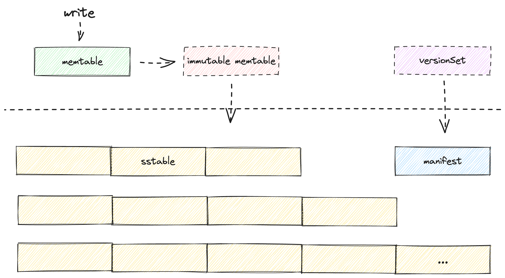
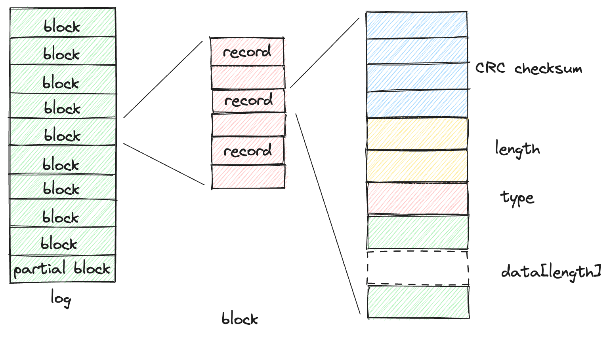
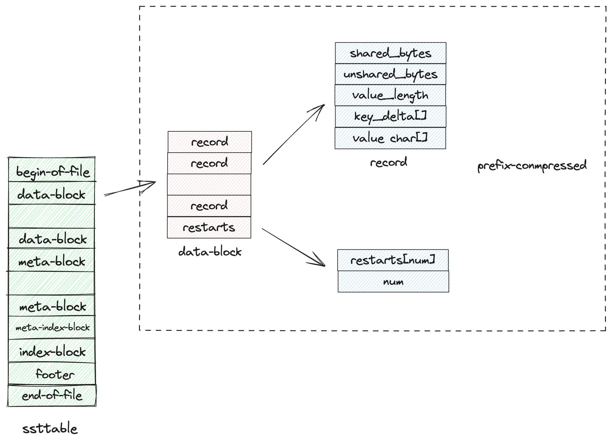
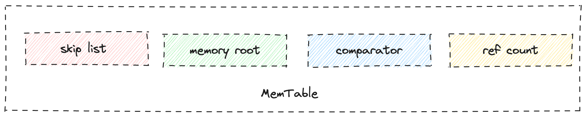
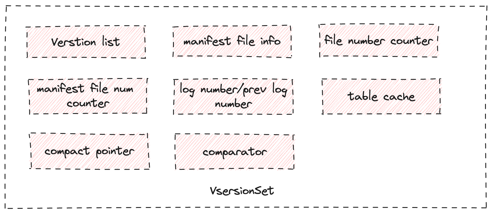
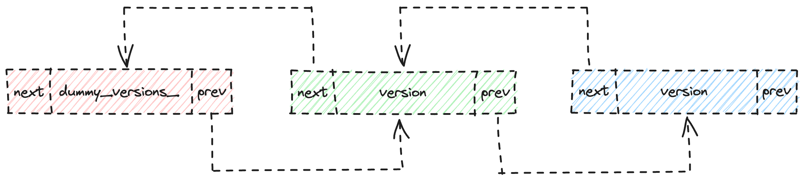
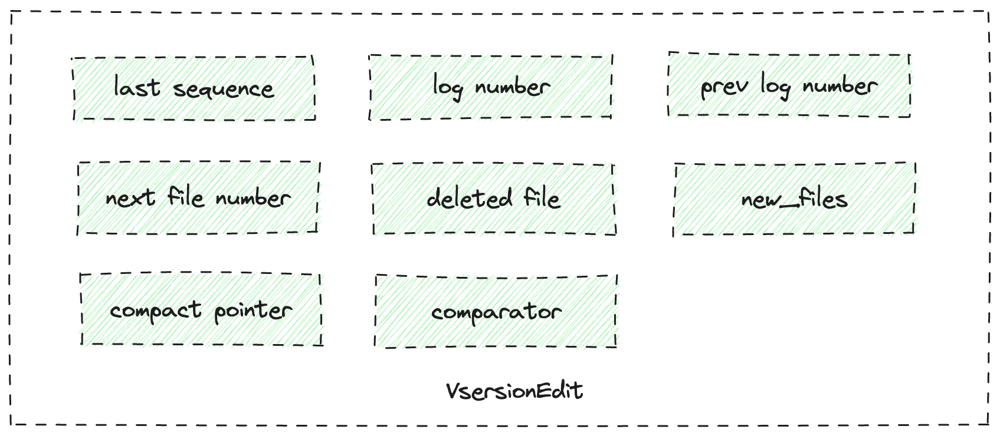
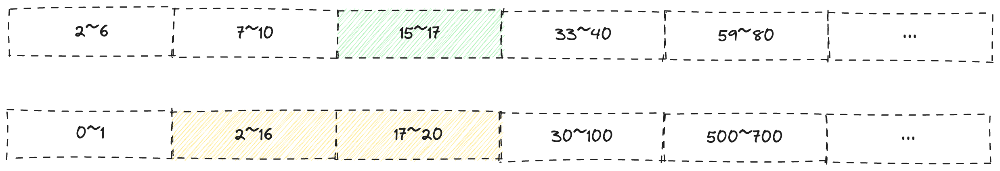
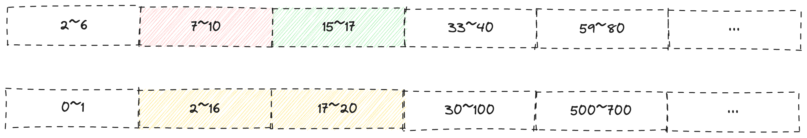

LSM Tree存储引擎分析 以LevelDB为例
1 存储引擎的设计范式
现在很多项目对所采用存储引擎架构的描述，都习惯性的采用 KV引擎 这样的术语来代表 LSM-Tree 结构。但是非 LSM-Tree 结构的存储引擎，例如我们熟悉的 innodb 也是通过KV的方式来对数据进行组织。目前看来，存储引擎的设计实际上主要分为两个分支，一个是以 innodb 为代表的以 B+ 树为索引组织的，以 page 为磁盘交换单位的设计方式；另一种就是以 LevelDB，rocksDB 为代表的以 LSM-Tree 为基础的设计方式。这两种方式的本质区别是与磁盘的数据交换单位，前着是 page ，后者是文件。
因此存储引擎的设计可以以这样的维度分为两个大类：
- page oriented
- LSM-Tree
不同的场景，不同的设计范式有着各自的优势。page-oriented 模式的存储引擎，良好的磁盘索引结构使得查询效率较高，以 innodb 为例子。比较适合读写负载比较均衡，读负载占多数的场景。LSM-Tree 模式的存储引擎，在写入负载占多数的场景中，有很好的性能表现，因为 LSM-Tree 的写入模式将磁盘的随机写转化成了顺序写。同时 LSM-Tree 方式可以支持比较好的压缩操作。对物理成本敏感的场景比较友好。
另外在当前云原生应用流行的今天，LSM-Tree 也有优势。云原生模式的存储一般采用对象存储的方式，如 S3 等。这种存储方式的特点是写入的数据无法原地更新，只能写入新的版本，对象文件无法像磁盘文件一样 seek()。这样的访问模型特别适合 LSM-Tree 这样的结构，因为 LSM-Tree 的 compaction 过程，只产生新的磁盘文件，不会更新老的文件。这也是很多云原生数据库采用类LSM-Tree 方式设计其存储引擎的原因。
2 Log Structured Merge Tree & LevelDB
LSM-Tree 最初的设计初衷是为了大量随机更新场景下，索引维护带来的问题。例如针对历史某个客户操作记录构建索引，而具体哪个客户进行操作，在时间线上是随机的，并且类似这样 tracring 类型的数据，写入负载比较重。因此该索引的更新和维护因为随机读写而产生比价大的开销。因此 LSM-Tree 将随机写转换成了顺序写来规避磁盘开销。通过异步的 compaction 来清理过期数据，并且在这个过程中也会维持磁盘文件之间的有序排放。查找操作方面，内存数据结构，磁盘文件内部都是有序结构；LSM-Tree 本身也会维护文件之间的有序结构。所以查找操作可以通过二分查找的方式来加速目标记录的定位过程。
levelDB 是 Google 实现的一个 LSM-Tree 结构的存储引擎。LevelDB 增加了 bloom filter 结构对查找操作进行加速，同时支持镜像读等功能。其基本结构如下图所示：

写入的数据首先会写入 memtable 内存有序结构，如果当前memtable 写满，则该 memtable 会转变为临时的内存结构 immutable memtable ，并通过 compaction 操作将内存结构序列化为内部有序的文件SSTABLE。compaction 流程会将过期数据清理，确保多个文件层次的状态满足当前的约束，每个层次的多个 sstable 文件也是按照每个文件内的最小的 key 的升序排序有序存放。同一个 key 的记录，level 层次数越小，版本号 sequence num 越大。这也表示着同一个 key 的 record 的不同版本，所在的层次越小，其数据状态就越新。
读取操作，扫描的路径为 memtable ，immutable memtable , SSTables。以这样的顺序进行读取。内存结构为 skipList 驱动的查找结构。 sstable 内部也是有序结构，可以通过二分查找进行加速。每个 level 的元数据，包括文件信息，每个文件的 key 取值范围，等都保存在 menifest 文件中并且有对应的内存结构VersionSet 用来查询，因此可以根据key值快速的定位具体的 level 层次。
3 LevelDB 核心数据结构
3.1 磁盘文件格式
3.1.1 Log
LevelDB 包含三种类型的日志：以 log 为后缀的文件，以 LOG 为名的文件，以及 manifest 文件。其中*.log 文件及 manifest 文件都是 WAL 类型的文件，服务于数据的 crash safe 和持久化。LOG 文件是 levelDB 的运行日志。 其中日志的格式如下： Log文件由多个 block 组成，每个 block 大小为 32KB。每个 block 由一个或者多个 record 组成，如果当前 block 中，剩余的空间不足 7 个字节，则该剩余的部分称为 trailer，该部分将被全部填充为 0。 record 是存储的物理单位，逻辑上一个 user record 可能由多个物理 record 组成：因为每个 block 是定长的。并且在一个user record 开始的时候，当前 block 中的剩余空间可能已经无法完整的保存一个 user record 。因此一个 user record 可以由多个 record 保存，这些 record 也可能保存在多个 block 中。type 字段就是用来表征当前 record 在一个 user record 中的位置的，其定义如下：

FULL == 1
FIRST == 2
MIDDLE == 3
LAST == 4
其中 FULL 表示当前 record 完整的保存了一个 user record。其他取值都表示了当前 record 保存了 user record 的哪一部分。FIRST 表示该 record 保存了 user record 的开头部分。LAST 表示该 record 保存了 user record 的结尾部分。MIDDLE 表示该 record 保存了该 user record 的中间部分。
- log file with
logsuffix 该文件为 memtable 的 WAL 文件。保存的内容就是所有写操作的内容，即 Key/Value 值。这部分内容保存在上述关于 record 描述中的 data 域中。 - manifest 该文件保存了对当前 LevelDB 文件结构改动，即数据库元数据的改动。这其中包括了新增了哪些文件，删除了哪些文件，当前的 log_number 是多少，最大的版本号是多少等等。所有的这些内容都会通过对数据结构 versionEdit 这个数据结构的序列化来实现填充，该数据结构的详细内容将会在[[LSM Tree 存储引擎分析-以LevelDB为例#4.3 Version & VersionSet & VersionEdit|4.3]]中详细介绍。
3.1.2 SSTable
Sorted Table 是用户数据在磁盘上的唯一形式，Sorted Table 本身是由有序的 key/value 数据及相关的元数据组成，下面是关于 SSTable 的结构图：

SSTable 逻辑上由 data-block, meta-block, index-block 及 footer 组成。其中除了 meta-block 和 footer ，其余的 block 本质上都是由有序的 key/value 键值序列构成，只是数据的逻辑含义不同。meta-block 和 footer 有自己的格式，用来保存 bloom filter 和 SSTable 的元数据。
- Prefix-Compressed manner Prefix-Compressed 方式是 LevelDB 用来保存有序 key/value 数据的一种数据组织方式，其特点是可以有效的减少 key 值的存储空间。在查找效率方面，支持 restart-part 的二分查找。 下面我们主要来看看是如何来保存前缀压缩的数据的，这一部分逻辑可以对应BlockBuilder::Add()的逻辑：
- 保存 KEY 时，只保存与上一个 KEY 的不同部分，并且记录前缀相同部分的长度。
- 在使用前缀压缩保存了一定数量 N 的 record 后，第 N+1 条 record 的 key 会被完整的保存，并且在这之后的 record 会再次进行前缀压缩保存。直到保存到第 2N 条数据的时候，第 2N+1 条数据的 key 会被再次完整的保存。
- 上述描述的过程中，第 N +1 条，第 2N +1 条记录被称为 restart point。N 的大小由参数控制。restart point 会被保存在 data_block 的末尾，用于 data_block 内的二分查找。
3.2 MemTable
用户的写入请求会优先写入内存中的 MemTable ，MemTable 经过序列化后转换为 SSTable。 为了达到持久性的要求，MemTable 有自己的 WAL log，其文件格式和记录方式见[[LSM Tree 存储引擎分析-以LevelDB为例#4.1.1 Log|4.1 log]] MemTable 是一个可查找结构，通过 skipList 来实现 o(log n) 复杂度的写入和查找效率。 MemTable 其结构如下：

其中 memory root 域由数据结构 Arena 描述，是一个内存管理结构，新插入的记录会被拷贝到该结构指定的内存中。key 和 记录的内存地址会被插入到 skip List 域中，用来完成查找操作。comparator 用于完成排序操作，主要是在skip list 写读写过程中被使用。ref count 是一个引用计数字段，确保 MemTable 的生命周期能被正确的结束。
3.3 VersionSet & VersionEdit
3.3.1 VersionSet
VersionSet 结构描述了当前整个数据库。其数据结构如下:

- Version List version list 是 versionSet 中最重要的数据结构，由变量 dummy_versions_表示，该变量本身是一个双向链表的头结点。该链表中每一个节点都是一个 version 类型的对象。Version 表示了当前时刻数据库的层级结构及每个层次包含的文件信息。如果发生了 compaction，那么层次结构和每个层次包含的文件的信息就会发生变化，此时，一个新的 version 对象就会被创建出来，描述变化后层次文件信息，并将该 version 对象插入整个链表的头部。VersionSet 包含一个 current 对象，其本身是一个 Version 类型的指针，该指针永远指向当前时刻数据库中最新的 version 对象。整个 version 链表如下图所示:

- Version Version 对象描述了当前 DB 的文件及其层次相关信息，其内部主要包含一个二位数组。以 level 序号区分多个一维数组，一维数组中保存了对应层次的SSTable 文件的元信息。
- log number / prev log number log number 特指memtable 的 WAL log 的编号，prev log number 当 memtable 转变为 immutable memtable 时，被赋值为对应的 log 的编号。因此该变量也可以被用作判断是否有 immutable memtable 正在被 compaction。
- file number counter levelDB 中，memtable 的日志文件及 SSTable 的磁盘文件的编号，是一个递增的整数。创建新文件时，由该变量自增获得新文件编号。这里需要注意的是，manifest 文件的编号也是一个递增的整数，但是是由另外一个变量独立计数的，变量名为 manifest_file_number_。
- compact_pointer compact_pointer 是 versionSet 中最重要的数据结构之一。当对某个 level 进行 compaction 时，选择哪一个文件进行 compaction？文件的选择就是依据 compaction_pointer 中的信息进行判断。 compaction_pointer 是一个数组，数组长度与当前 DB 的文件层次相同，即如果当前 DB 最多有 7 个 level ，则数组长度就为 7。与 level 层级对应的数组元素保存的就是对应层次 compaction 起始点的 KEY 值。需要选择文件进行 compaction 时，只需要读取对cpmact_pointer 中对应层次的 key值，并且根据 key 值，在当前层次中选择包含该 key 值的第一个文件作为 compaction 的输入文件。
3.3.2 VersionEdit
VersionSet 保存在当前数据库最重要的数据结构，包括了日志文件序号，当前最大的序列号，compction_pointer，version List 等信息。这些信息在 DB 重新打开的时候，需要得到正确的恢复。因此 versionSet 中的信息需要持久化的保存。 同时，随着系统的不断运行，VersionSet 中的信息也是在不断被更新的，为了满足持久化的要求，所有针对 versionSet 的更新操作都序列化后以日志的方式写入磁盘上的 manifest 文件，然后再更新内存中的数据结构，通过 WAL 实现 crash-safe recover 的目标。 VersionEdit 就是描述针对 versionSet 变更操作的数据结构。简单讲就是所有的更新操作会先写入 versionEdit 结构，然后再 apply 到系统运行时的 VersionSet 上。 VersionEdit 结构包含了序列化的接口，方便在 apply 更新到 VersionSet 上之前进行磁盘的写入操作。 VersionEdit 数据结构如下图所示

4 LevelDB 读写流程
4.1 读流程
Get 操作的数据读取流程为:
根据 KEY 在 memtable 中进行查找，如果没有命中并且当前系统有 immutable memtable存在，泽在 immutable memtable 中进行查找。如果前面两个内存结构都没有找到相应的结果，则开始磁盘文件中寻找。 memtable 与 immutable memtable 本质上是完全相同的数据结构，区别就是前者可以继续写入，后者不能被写入。immutable memtable 在 compaction 结束后会变成 SSTable。 memtable 的查找操作就是通过 skipList 执行二分查找来完成。这里不在展开。 SSTable 的查找，主要通过Version对象的 GET 接口完成。Version 对象包含了所有层次及文件的元数据信息。 Version 对象的 GET 函数，其核心操作流程就是从 level-0 开始，依次逐层的找到包含待查询 Key 的文件，如果找到则获取到文件的元数据信息，包括文件编号等，然后通过 table_cache 对象在内存中讲该表打开，执行表内的搜索。 表内的搜索，结合[[LSM Tree 存储引擎分析-以LevelDB为例#4.1.2 SSTable|SSTable]]的结构描述，其整个搜索过程包含两个大的部分。第一个部分就是先通过 index 找到对应的 data_block；在 data block 中再次进行查找。如果 SSTable 包含 bloom filter那么，会首先根据 bloom filter 的结果快速的跳过不包含待查找 key 的data block。 如果读操作中包含了 snapshot 信息，那么在判断record 是否匹配是，需要增加一个额外的条件，就是 record 的 sequence number 必须要小于等于读操作的 sequence number。这么看来，levelDB 的镜像读的实现还是很易于理解。
4.2 写流程
写流程相对简单，用户的写操作，包括了 put 和 delete ，都是对 memtable 的操作。具体流程在 DBImpl::Write() 函数中。 整体的流程主要分为两个大部分，第一个写日志，第二个写 memtable。 这里整体逻辑很简单，不再花篇幅介绍，读者可以自行查阅代码。
5 LevelDB Compaction 流程
5.1 触发时机
所有 compaction 的触发调用都在函数 MaybeScheduleCompaction()，该函数会把真正执行 compaction 的函数句柄以任务的形式保存在后台线程的任务队列中，然后由后台线程顺序执行。 任何一个读写流程都有可能调用MaybeScheduleCompaction()来触发 compaction，下面会展开讲一下读写流程中的触发条件和时机。
- 写流程触发 Put/Delete 操作只对 memtable 对象进行修改。memtable 能够保存的写入的数量是有上限的(默认 4M)，因此当 memtable 没有空间能够继续保存新的写入请求时，需要创建新的 memtable 来承载写入请求，老的已经写满的 memtable 会转变为 immutable memtable。如果有新的 immutable memtable 产生，那么就需要触发 compaction，将这个 immutable memtable 转变成 SSTable 保存在磁盘上。
- 读流程触发 读操作本质上不会新产生任何的新的数据，并且不会对现有的文件层次及结构带来变化。那么是什么因素会引发读操作的 compaction 触发呢？ 如果某一个文件，多次的 get 请求都没有从该文件中获取到应用需要的记录，那么该文件应该被 compact 到更低的层次中。这样设计的原因我理解是基于这样的逻辑： LSM-Tree 的设计思路是这样的：假设一个 key 的范围是[p, q] ，任何一个 key 值落在这样一个取值范围内，其保存位置所在的层次越低，查询该记录的物理开销就越小。因此合理的做法是，应该把业务经常访问的数据放在层次低的位置，这样能更加有效率的完成查询；反之如果一个记录，业务的访问频率很低而且其所在的层次还比较低，那么这时将该记录移动到更高的层次是合理的选择。移动后，当前层次的空间就会被释放出来，供新的数据保存。 因此，levelDB 在设计的时候，文件元数据信息中有个字段叫做 allow_seek。如果当前文件在本次查询中被访问到但是没有从文件中读取到需要的数据。则allow_seek 会减一。 回归到 Get 操作本身。如果当前的查询操作，经过 memtable 与 immutable memtable都没有找到需要的数据时，那么就会开始从小的层次开始，逐层的扫描磁盘文件进行查找。在这个过程中，如果扫描的文件超过了一个，即第一个文件覆盖了当前查询的 key 值但是没有与 key 值相匹配的数据，那么该文件元信息句柄会被保存下来，在当前的查询结束时，对 allow_seek执行减一操作。 在完成了 allow_seek 的计数操作后，如果当前的 allow_seek 已经耗尽，那么该文件的信息会被保存到 Vsersion 对象中，并触发一次 compaction。
5.2 执行流程
每次 compaction 执行后，其结果是更新了当前磁盘文件的结构，即文件层次和每一层文件的新增和删除。因此每次 compaction 执行后，都有可能在某些层次上，文件大小超过了触发 compaction 的阈值。因此在每次执行完 compaction 后，都会自动再次发起一次 compaction。 compaction 操作包含两个大的分支，有memtable 需要处理，优先处理 memtable，结束后返回；如果没有 memtable 需要处理，则处理磁盘文件的 compaction，选在符合条件的层次执行 compaction。
5.3.1 memtable compaction
memtable 的compaction 主要操作就是将 memtable 的内容以 SSTable 的格式写入文件。这里逻辑比较简单，不再花篇幅介绍。需要额外花篇幅介绍的是，由 memtable 生成的 SSTable ，其存放层次是如何选择的。
- PickLevelForMemTableOutput() 比较简单的去推测这个逻辑，其实放在 level-0 完全可以满足 LSM-Tree 的约束要求了。但是 levelDB 对这一逻辑进行了优化，其优化的动机是这样的：level-0 相对于其他的层次，触发 compaction 后会有多个文件一起进行，原因是 level-0 是所有层次中唯一允许不同文件之间其 key 的取值范围可以重复的。越多的文件进行 compaction 则开销越大。因此如果新生成的 SSTable 文件与当前 level-0 中的文件没有重叠的 key 值范围，那么可以尝试尽可能的将该文件向更高层次的位置存放。如果与 level-0 有重叠的范围，则必须放在 level-0 ，否则会读取到老版本的数据引发丢数据的问题。 那么这里的 level 选择逻辑就是这样的：
if(overlapWithLevel(0)){
return level-0;
}
current-level = level-0;
while(!overlapWithLevel(current-level +1)){
if(!conditions(current-level +1)){
// current-level + 1 是否满足其他的条件
break;
}
current-level ++;
}
return current-level;
从上面的伪代码中可以看到，当发现下一次层和当前的新的 SSTable 文件没有 key 值范围的重叠后，我们还需要额外判断一些条件，才能确定这个层次是可以存放当前的新 SSTable 文件的：
- 如果将当前文件存放在该层次，那么当对该文件进行 compaction 的时候，下一层的被选在进行合并的文件不能过多，否则会引发太庞大的 companction 操作。
- memtable 生成的 SSTable 文件下推的层次数是有限制的。
5.3.2 磁盘文件的 compaction
磁盘文件的 compaction 按照下面的流程来执行：
- 选择一个层次来执行 compaction
- 准备compaction 的执行参数，主要是当前层及下推层哪些文件需要被 compact。
- 执行 compaction 接下来我会针对这三个步骤逐一进行拆解。
- compaction 层次选择
Version 对象中，包含两个变量compaction_level_ 和 compaction_score_，分别记录了层次编号和该层次对应的一个评分。评分越高，则越有可能被选中执行 compaction，而 compaction_level_ 和 compaction_score_ 两个字段记录了评分最高的层级的级别编号和分数。如果当前的分数大于1 ，则该层次满足了触发 compaction 的要求，该层次会被选中作为 compaction 的起始层次。
compaction_level_ 和 compaction_score_ 是在什么时候被更新的呢？我们知道 LSM-Tree 架构下的磁盘文件，一旦被写入磁盘就不会再次更改了，唯一的变化就是文件的创建和删除。而文件的创建和删除会引发新的 DB 元数据的更改，产生新的 version 对象。因此 level_ 和 score_ 这两个参数在 version 对象被创建的时候，就会被确定下来。 其计算方式也很简单，针对 level-0 ，文件个数的计算 score_ 的输入参数。针对非 level-0 ，当前层次所有的文件大小的总和是计算 score 的输入参数。计算完成时，选择分数最大的一层将层次编号和分数记录在 version 对象中。
- compaction 参数设置
compaction 参数设置中，最为重要的是参与 compaction 的层次及文件的选择。
compaction 的层次选择，可以参见上一小节的内容。文件的选择是通过参考 VersionSet 中的 compact_pointer_ 对象来进行决定的。总的来说，compact_pointer_ 记录了每一个层次进行 companction 的key 的起始范围，根据这个范围再选定一个覆盖这个范文的文件作为起始文件。
按照这样的逻辑，参与compaction 的第一层的文件个数一定为 1，第二层选在与该文件有范围覆盖的一个或者多个文件。可是 LevelDB 在这样的逻辑的基础上，增加了一点小的优化，就是会再次根据第二层的文件的范围，去扩大第一层的文件的范围，争取一次性多 compaction 一点。整个流程可以从下面的图示更直观的看到。

上图可以表示第一次计算得到的 level-i 和 level-i+1 层的输入文件信息，带有颜色的表示被选中进行 compaction 的文件
我们可以发现，针对 level-i 层次的文件，其中 key 的范围再 7~10 的文件可以一并放入当前的 compaction 文件集合中，因为该文件的加入不会增加 level-i+1 层次的文件个数。因此在对 level-0 的文件进行扩充后，文件列表的变化如下图所示

- 执行 compaction
compaction 的执行，实际上所做的操作就是将两层的输入文件中的数据按照 key 的排序进行扫描，并把过期不需要再保存的历史版本的数据删除。因此执行 compaction 这里需要厘清两个方面的问题：1、如何按照 key 的顺序扫描所有的分布在两个层次中的输入数据。2、如何判定一个数据是过期的，可以被删除。接下来我们逐个的分析。
1、按照 key 的顺序扫描两层的待 compaction 文件
levelDB 通过对 TwoLevelIterator 和 MergeIterator 这两个数据结构的组合使用，模拟了一个非常简单的迭代器的接口。每次对迭代器的取值，都能获取到符合要求（按照 key 的排序访问 record，尽管这些 record 可能保存在不同的层次中，同一个 key 的 record 按照版本号由大到小的进行访问）的记录，为上层的数据过期判定逻辑提供了清晰简洁的访问接口，便于上层逻辑的展开。
TwoLevelIterator
每次 compaction 的输入参数包含两个层次的文件，第一个层级就是我们当前正在进行 compaction 的层次，第二个层次就是新生成的文件的存放层次，即当前层次的下一个层次。compaction 过程会把第一个层次中待处理的文件以及与这些文件有范围重叠的所有的第二层的文件存放在一个数组中，数组元素是一个 vector 每个 vector 元素表示一个文件。因此这两层的文件就用一个长度为 2 的 vector 类型的数据来表示。这里的 Twoiterator 的作用就行针对每一个数组元素，也就是对应的 vector 对象，该 vector 可以按照key 的顺序对这些文件记性遍历。
这里需要额外提到的一点是，levelDB 中的每个 version , 也就是每次生成新的 SSTable 后产生的新的磁盘文件结构，每一层的文件都是按照 key 的范文进行排序的，具体的是按照每个文件的最小的 key 值，将文件按照该 smallestKey 值由小到大的进行排序。
那么 TwoLevelIterator 的工作方式其实是通过两个迭代器来协同工作，这里我们从他的构造函数参数也能看得到。
首先先获得一个遍历文件列表的迭代器，该迭代器能够顺序的给出文件列表中单个文件的元信息。根据这个元信息，创建一个遍历文件内容的迭代器，该迭代器可以根据文件内key 值的大小，从小到大的读取到文件内的 record 内容。
由上我们可以知道，TwoLevelIterator 的功能就是从一个有序的文件列表中，按照 key 值排序从小到大的将文件中的内容读取出来。
MergeIterator
每次 compaction 由两个文件列表组成，一个是当前层次的文件列表，另一个是下推层次的与该层次 key 值重合的文件列表。我们针对这两个有序的文件列表都创建一个 TwoLevelIterator 。
针对 compaction 来说，需要按照两个输入层次中所有文件的 key 值排序的方式，由低到高的去遍历这些文件，如果key 值相同，则按照版本号 sequence num 的大小，由高到低的来进行访问。
此时，我们已经有了针对每个文件层次的一个 TwoLevelIterator，因此为了达到上述的目标，我们只需要借鉴 mergeSort 的思路，比较两个 TwoLevelIterator 的值，按照 key 值升序，版本号降序的排序方式，输入最小的值作为当前的输出即可。
LevelDB 中的 iterator设计是一个亮点，通过 iterator 这种简单的抽象，使得整个 compaction 逻辑看上去清晰且易于理解。并且迭代器的使用很好的对多层次文件遍历和排序进行了良好的模块化封装，代码结构清晰且易于理解，是值得学习的工程实践。
6 LevelDB Recover 流程
在讨论recover 流程之前，我们先简单的思考下，那些重要的数据是需要在 recover 过程中被回复到内存中的。
1、VersionSet 对象是重要运行时元数据保存的数据结构，需要被完整的恢复出来。
2、memtable 作为读写缓冲，也需要被完整的恢复出来。
VersionSet 对象可以通过 manifest 文件进行恢复。memtable 可以通过 log 文件进行恢复。这也是整个 levelDB 中采用 WAL 方式记录日志的唯二的两个数据结构。
整个的恢复流程就是读取文件，解析信息然后读取信息的过程。其中 manifest 文件的读取，配合 versionEdit 数据结构来构建新的 version 和 versionSet 对象。memtable 的恢复是通过读取 log 文件，然后模拟写入流程来重新构建内存表。
具体流程不再展开，希望了解细节的读者可以从 dbimpl:Recover() 函数开始分析。
7 LevelDB 工程代码设计哲学
在阅读 LevelDB 代码的过程中，有很多优秀的设计方式和工程实践，都是值得给我们学习的，这里我简单的罗列一些供大家参考讨论。
1、良好的可移植性
LevelDB 针对平台相关的系统调用和库函数专门通过 portable 模块来进行封装，剥离了平台相关代码和引擎逻辑代码，便于平台的迁移。
2、良好的抽象设计和模块化设计
系统的关键数据结构，MemTable，Version , VersionSet，interator 等的设计符合正交性设计的原则，系统功能的划分都被很好的进行了归类和封装。统一的抽象接口，例如 iterator 的灵活使用，简化了引擎逻辑代码的编写。当然过多的抽象层次也可能引发性能问题，如过多的虚函数调用等等。针对这些方面，levelDB 也做了相对应的优化，例如使用 iteratorWrapper 这样的本地 cache 类型的对象进行封装。
3、优秀的代码规范
Google 的 C++ 代码规范确实能够起到提效的作用。通过良好的代码命名和规范，为阅读代码提供了非常大的便利，经常通过变量函数的命名方式就能区分出是成员变量还是临时变量。函数参数的引用传递也统一使用指针的方式进行，这样在阅读代码时就能清晰的看出来函数调用对上下文变量的使用时拷贝还是引用。
4、完善的单元测试和性能测试工具
完善的测试代码一方面能有保证项目质量的稳定，方便新版本的回归。另一方面，有利于代码的学习和深入，有时通过测试代码就能理解系统不同模块之间的工作方式和细节。从测试代码入手去学习一个开源项目也是一种非常重要及有效的手段。因此我们可以看到凡是社区活跃度很高的开源项目，其项目的单元测试及文档都是非常完善的
5、优秀的编码逻辑表达能力
关于工程代码的编码风格一直以来有两种看法，一种强调代码效率，认为代码效率高于可读性。另一种强调可读性，认为代码最终需要确保其可维护性。LevelDB 很好的在性能和可维护性上取得了平衡。这里个人认为，其良好的可读性来源于良好的模块化设计及合理的抽象化设计。而关于性能优化部分的编码和设计思路也得益于模块化的设计和完善的注释，使得其在维护和理解上变得很容易。
整体看来，只要是有过 C++语言编写经验的人，都可以顺利的阅读整个 LevelDB 的代码。整个项目没有使用任何不常用的语法及标准库类型。由此可见，好的执行性能及代码风格最终取决于设计的优劣，抽象化、模块化、单元测试完备程度等因素，高级语法的掌握程度与是否能写出优秀的项目并没有直接的关系。